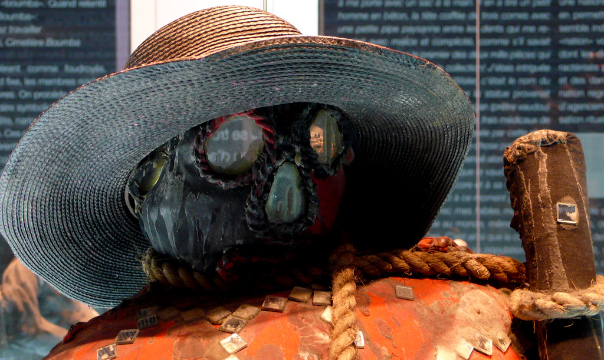
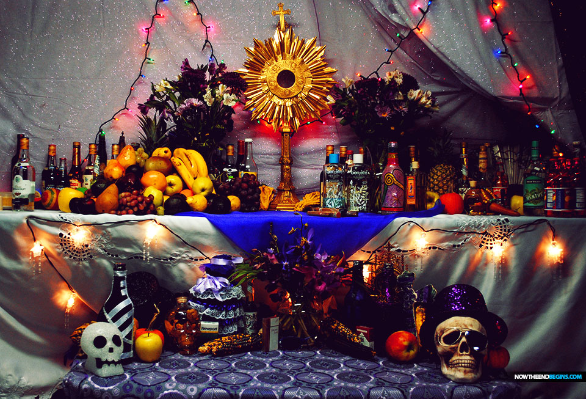
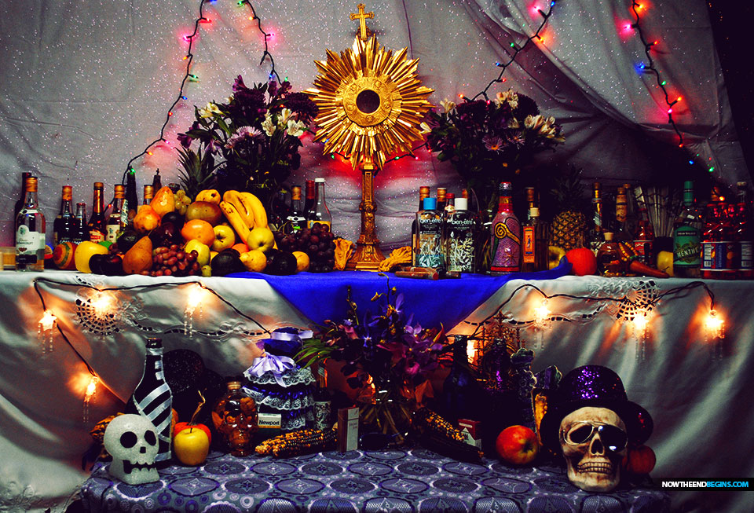

Comprendre le Vodou haïtien dans toute sa compléxité
L’histoire du vodou haïtien remonte à la colonisation française d’Haïti.
Après l’Indépendance, malgré le rôle prépondérant qu’il y a joué, le vodou n’a pas obtenu la place qu’il méritait parmi les religions de l’île.
De nos jours encore, ses adeptes sont victimes de préjugés.

Le Vaudou Haïtien : présentation
Le Vaudou est un ensemble de croyances et de rites d’origine africaine qui, étroitement mêlés à des pratiques catholiques, constituent la religion de la plus grande partie de la paysannerie et du prolétariat urbain de la République noire d’Haïti. Ses sectateurs lui demandent ce que les hommes ont toujours attendu de la religion: des remèdes à leurs maux, la satisfaction de leurs besoins et l’espoir de se survivre. Vu de près, le vaudou n’a pas le caractère hallucinant et morbide que la littérature coloniale lui prête. Bien qu’il soit associé à la magie noire par les européens, le vaudou a pour principale fonction de protéger ses adeptes de toutes les formes de sorcellerie.
 

Origines et Histoires
Au 15 eme siècle commence le commerce d’esclaves africains en direction de Haïti. Ces hommes provenaient surtout du Dahomey et du Nigéria. On estime à dix milles le nombre de noirs vendus chaque année à Ouidah (Bénin). Lorsqu’on parcourt les quelques kilomètres qui, à travers dunes et marais, unissent la ville à la côte, on ne peut s’empêcher d’accorder une pensée à ces longues caravanes d’hommes, de femmes et d’enfants, pour qui ce trajet fut le dernier sur le continent natal.
Mahi et Nago (Yoruba) occidentaux étaient les adversaires traditionnels des Dahoméens. Les razzias dont ils étaient les victimes ont eu pour conséquence qu’aujourd’hui encore, on ne célèbre jamais en Haïti, de cérémonies du rite rada (dahoméen) sans exécuter des danses mahi ni “saluer” et invoquer les dieux nago. Les Dahoméens contemporains n’ont pas perdu le souvenir de leurs frères paris au-delà des mers. Lorsqu’ils offrent des sacrifices aux ancêtres royaux, ils n’oublient pas ceux qui, jadis, ont été vendus aux Blancs. Certains, dans leur désir de “blanchir” les cultes vaudou, ont fait de ce mot une corruption de “Vaudois” (nom d’une secte fondée au XIIe siècle par Pierre Valdesius mais qui avait fini par être appliqué indistinctement aux hérétiques et aux sorciers). Or, au Dahomey et au Togo, chez les tribus appartenant à la famille linguistique des Fon, un vodû est un “dieu”, un esprit, son “image”, bref, tout ce que les européens appellent “fétiches”. Les servantes de la divinité sont des hounsi (en Fon hû, divinité, et si, épouse); le prêtre est le hougan, c’est à dire le “maître du dieu”. Les accessoires du culte portent encore leurs noms dahoméens: gôvi (cruches), zê (pot), asô (hochet sacré), azê (emblèmes sacrés), hûnto (tambour), etc. De plus, les principales divinités sont encore classées selon les tribus ou les régions d’Afrique don telles sont originaires. C’est ainsi que nous avons des dieux Nago, Siniga (Sénégalais), Anmine (Minas), Ibo, Congo et Wangol (Angola). Quelques dieux portent même en épithète le nom de leur patrie africaine: Ogou badagri (Badagri est ville du Nigéria) et Ezili-Fréda-Dahomey

Un mélange de spiritualité africaine et catholicisme
Les adeptes du vaudou ne sont nullement gênés par l’opposition entre la spiritualité africaine et leur croyance en un Dieu suprême et tout-puissant. Néanmoins je tiens à souligner qu’a vu d’œil, il est facile de penser que la religion vaudou est polythéisme tout comme les religions africaines. Mais en allant au delà de nos préjugés et en approfondissant nos connaissances, vous pourriez constater qu’ils sont monothéistes tout comme les religions dite révélées. Un dieu suprême et créateur au dessus tout, qui délègue à ses enfants (loa, dieux, déesses, etc), qui ne sont que des émanations de lui sous différentes formes. Tout comme le Dieu biblique, dont Jésus est son fils et en même temps lui et qui est accompagné de l’esprit sain et des anges….